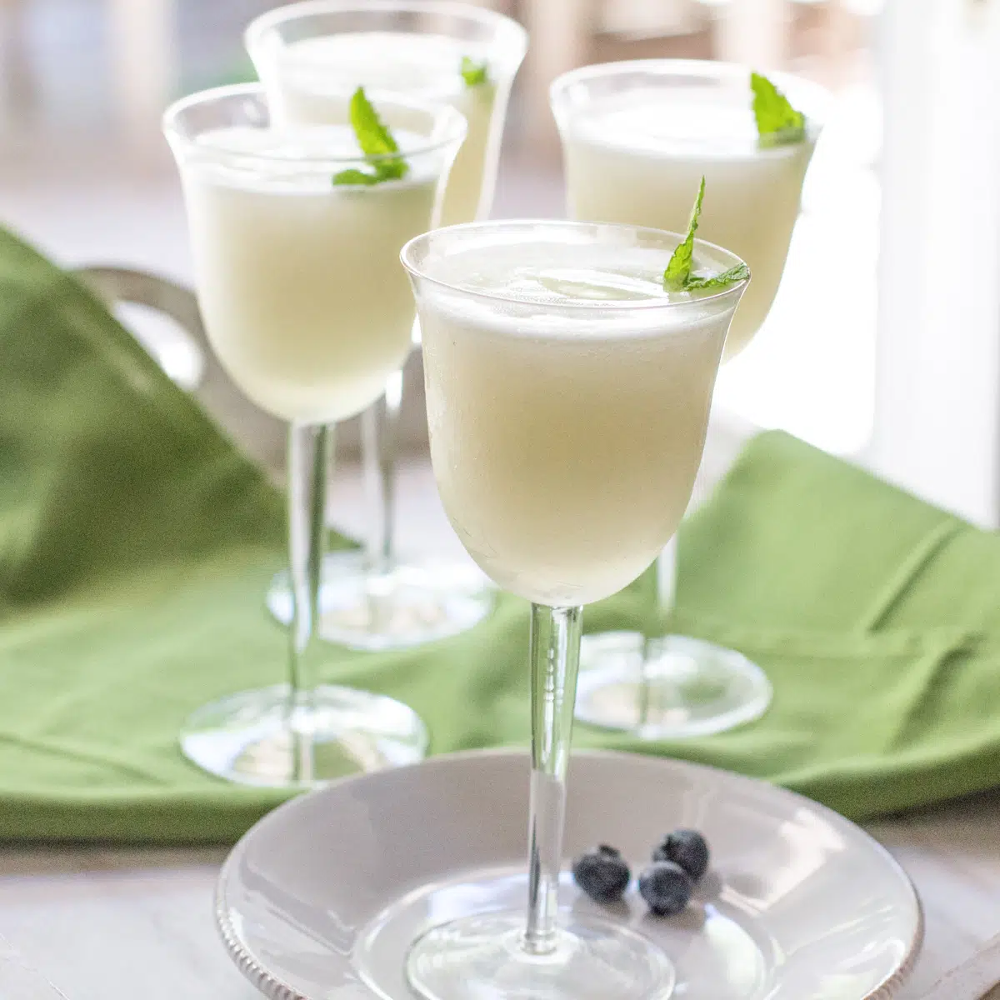

Sgroppino (an Italian Cocktail)

Ingredients
- 12 ounces frozen lemon sorbet
- 8 ounces Prosecco
- 2 ounces vodka
- Mint leaves, for garnish
Steps
- Scoop the sorbet into a large metal bowl. Add one-half of the Prosecco and whisk it around until you have a smooth icy mixture.
- Whisk in the vodka and remaining Prosecco. The cocktail should be very slushy.
- Pour into champagne flutes or other pretty glasses. Garnish with fresh mint and a few blueberries. Or, pour into jars and place them in the freezer until ready to serve.
Home